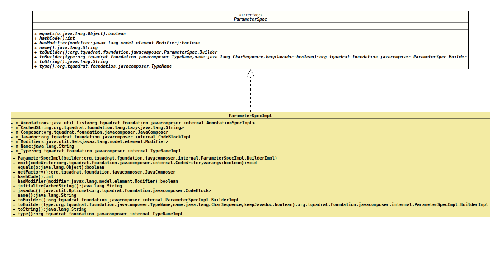

Interface ParameterSpec
- All Known Implementing Classes:
ParameterSpecImpl
@ClassVersion(sourceVersion="$Id: ParameterSpec.java 923 2021-05-24 08:11:36Z tquadrat $")
@API(status=STABLE,
since="0.0.5")
public interface ParameterSpec
The specification for a generated parameter declaration.
- Author:
- Square,Inc.
- Modified by:
- Thomas Thrien (thomas.thrien@tquadrat.org)
- Version:
- $Id: ParameterSpec.java 923 2021-05-24 08:11:36Z tquadrat $
- Since:
- 0.0.5
- UML Diagram
-

UML Diagram for "org.tquadrat.foundation.javacomposer.ParameterSpec"
{kind=link}
-
Nested Class Summary
Nested ClassesModifier and TypeInterfaceDescriptionstatic interfaceThe builder for an instance ofParameterSpec -
Method Summary
Modifier and TypeMethodDescriptionstatic ParameterSpec.Builderbuilder(Type type, CharSequence name, Modifier... modifiers) Deprecated, for removal: This API element is subject to removal in a future version.static ParameterSpec.Builderbuilder(TypeName type, CharSequence name, Modifier... modifiers) Deprecated, for removal: This API element is subject to removal in a future version.booleanstatic ParameterSpecget(VariableElement element) Deprecated, for removal: This API element is subject to removal in a future version.Replaced byJavaComposer.createParameter(VariableElement).inthashCode()booleanhasModifier(Modifier modifier) Checks whether this parameter has the given modifier.name()Returns the name of this parameter.static ParameterSpecof(Type type, CharSequence name, Modifier... modifiers) Deprecated, for removal: This API element is subject to removal in a future version.static ParameterSpecof(TypeName type, CharSequence name, Modifier... modifiers) Deprecated, for removal: This API element is subject to removal in a future version.Returns a builder that is initialised with the components of this parameter.default ParameterSpec.BuildertoBuilder(TypeName type, CharSequence name) Deprecated, for removal: This API element is subject to removal in a future version.Replaced bytoBuilder(TypeName, CharSequence, boolean).toBuilder(TypeName type, CharSequence name, boolean keepJavadoc) Returns a builder for a parameter with the given type and name, and that is initialised with the components of this parameter.toString()type()Returns the type of this parameter.
-
Method Details
-
builder
@Deprecated(since="0.2.0", forRemoval=true) @API(status=DEPRECATED, since="0.0.5") static ParameterSpec.Builder builder(Type type, CharSequence name, Modifier... modifiers) Deprecated, for removal: This API element is subject to removal in a future version.Creates a builder for a newParameterSpecinstance.- Parameters:
type- The type of the new parameter.name- The name of the new parameter.modifiers- The modifiers for the new parameter.- Returns:
- The builder.
-
builder
@Deprecated(since="0.2.0", forRemoval=true) @API(status=DEPRECATED, since="0.0.5") static ParameterSpec.Builder builder(TypeName type, CharSequence name, Modifier... modifiers) Deprecated, for removal: This API element is subject to removal in a future version.Creates a builder for a newParameterSpecinstance.- Parameters:
type- The type of the new parameter.name- The name of the new parameter.modifiers- The modifiers for the new parameter.- Returns:
- The builder.
-
equals
-
get
@Deprecated(since="0.2.0", forRemoval=true) @API(status=DEPRECATED, since="0.0.5") static ParameterSpec get(VariableElement element) Deprecated, for removal: This API element is subject to removal in a future version.Replaced byJavaComposer.createParameter(VariableElement).Creates an instance ofParameterSpecfrom the givenVariableElementinstance.- Parameters:
element- The variable element.- Returns:
- The parameter spec.
-
hashCode
int hashCode() -
hasModifier
Checks whether this parameter has the given modifier.- Parameters:
modifier- The modifier.- Returns:
trueif the parameter has the given modifier,falseif not.
-
name
Returns the name of this parameter.- Returns:
- The name.
-
of
@Deprecated(since="0.2.0", forRemoval=true) @API(status=DEPRECATED, since="0.0.5") static ParameterSpec of(Type type, CharSequence name, Modifier... modifiers) Deprecated, for removal: This API element is subject to removal in a future version.Creates a newParameterSpecinstance for the given arguments.- Parameters:
type- The type of the new parameter.name- The name of the new parameter.modifiers- The modifiers for the new parameter.- Returns:
- The parameter specification.
-
of
@Deprecated(since="0.2.0", forRemoval=true) @API(status=DEPRECATED, since="0.0.5") static ParameterSpec of(TypeName type, CharSequence name, Modifier... modifiers) Deprecated, for removal: This API element is subject to removal in a future version.Creates a newParameterSpecinstance for the given arguments.- Parameters:
type- The type of the new parameter.name- The name of the new parameter.modifiers- The modifiers for the new parameter.- Returns:
- The parameter specification.
-
toBuilder
Returns a builder that is initialised with the components of this parameter.- Returns:
- The builder.
-
toBuilder
@Deprecated(since="0.2.0", forRemoval=true) default ParameterSpec.Builder toBuilder(TypeName type, CharSequence name) Deprecated, for removal: This API element is subject to removal in a future version.Replaced bytoBuilder(TypeName, CharSequence, boolean).Returns a builder for a parameter with the given type and name, and that is initialised with the components of this parameter.- Parameters:
type- The type for the new parameter.name- The name for the new parameter.- Returns:
- The builder.
-
toBuilder
Returns a builder for a parameter with the given type and name, and that is initialised with the components of this parameter.- Parameters:
type- The type for the new parameter.name- The name for the new parameter.keepJavadoc-trueif an existing Javadoc comment should be preserved,falseit it should be dropped.- Returns:
- The builder.
-
toString
-
type
Returns the type of this parameter.- Returns:
- The type
-
JavaComposer.parameterBuilder(Type, CharSequence, Modifier...).